Mein Stammbaum
Personen
| Anzahl der Personen | 57 |
| Männliche Personen | 31 |
| Weibliche Personen | 26 |
| Personen mit unbekanntem Geschlecht | 0 |
| Intersexuelle Personen | 0 |
| Personenereignisse | 118 |
Familien
| Anzahl der Familien | 23 |
| Verheiratete Familien | 17 |
| Geschiedene Familien | 0 |
| Familienereignisse | 17 |
Zeit & Datum
| Frühestes Datum | 1600 |
| Letztes Datum | 09.09.1899 |
Statistikdiagramme
Alter bei Tod
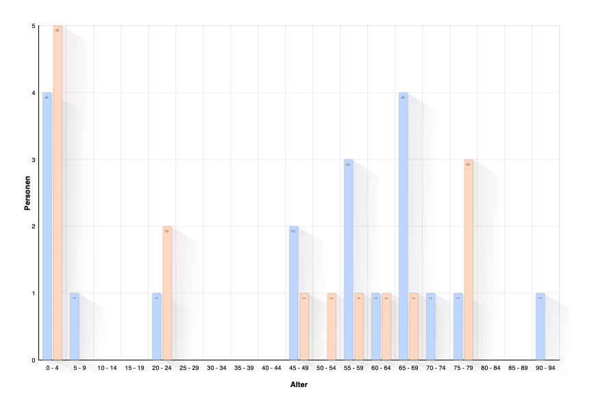
Alter bei Taufe
Alter bei Hochzeit
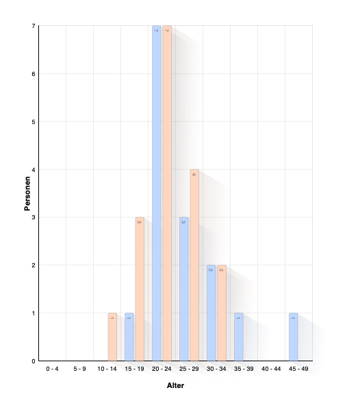
Alter der Eltern bei Geburt des Kindes

Alter des Kindes bei Tod der Eltern
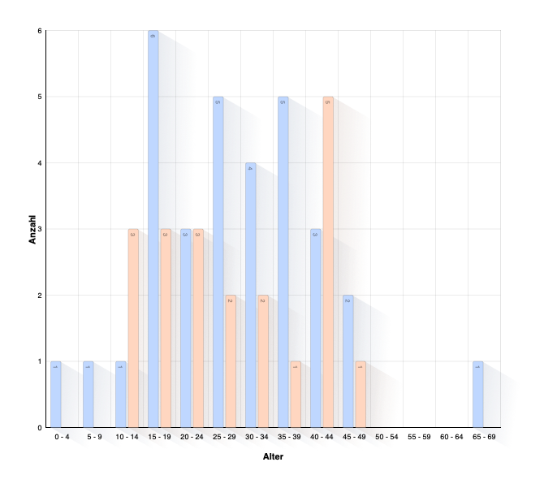
Alter der Personen bei Tod des Partners
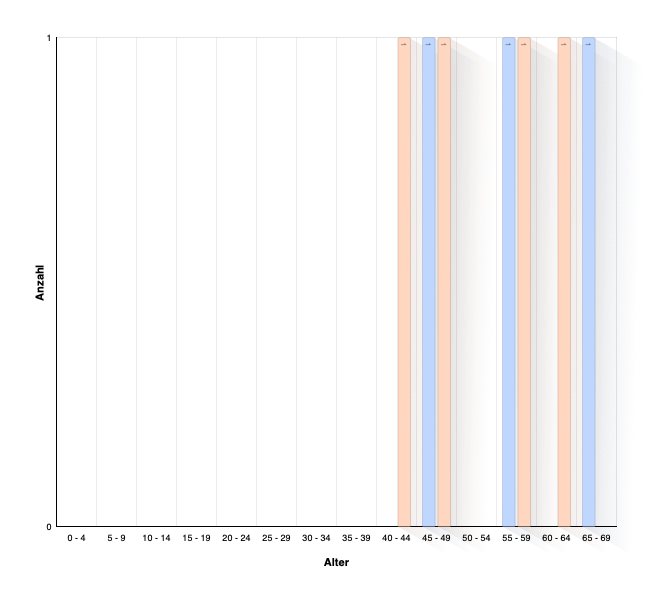
Zeit zwischen Hochzeit und Geburt der Kinder
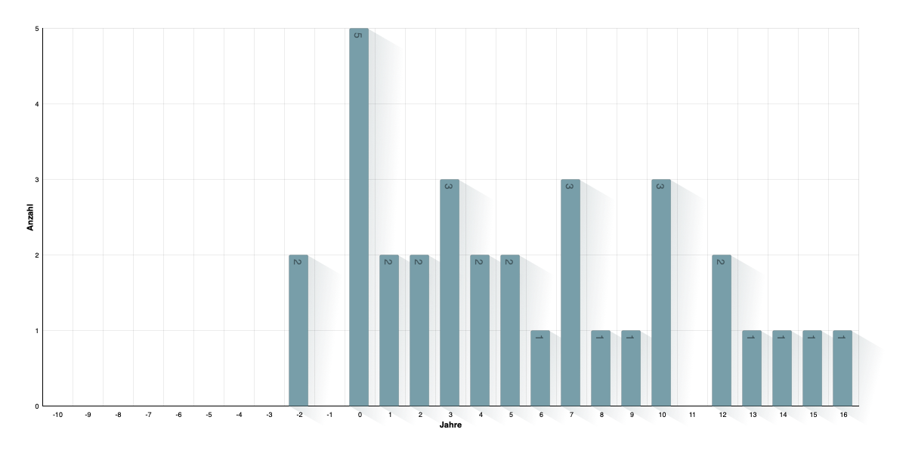
Verteilung der Nachnamen
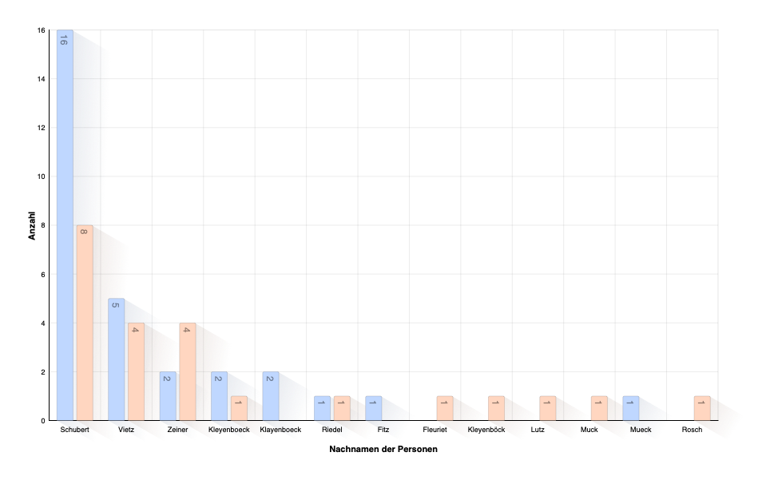
Verteilung der Vornamen
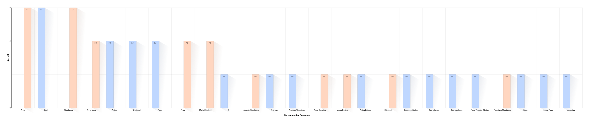
Verteilung der Namenstitel

Geburtsjahr
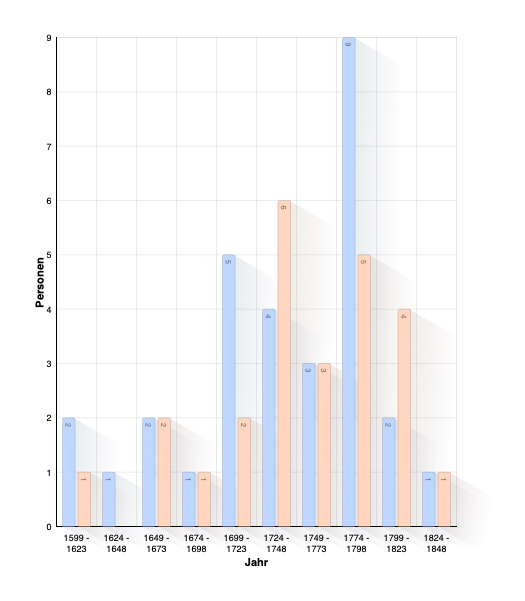
Jahr der Taufe
Todesjahr
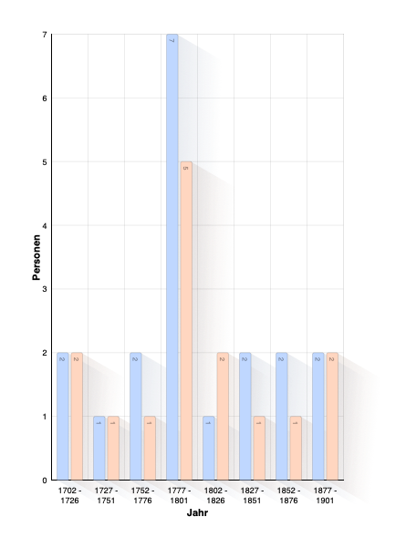
Jahr des Begräbnisses
Geburtsmonat
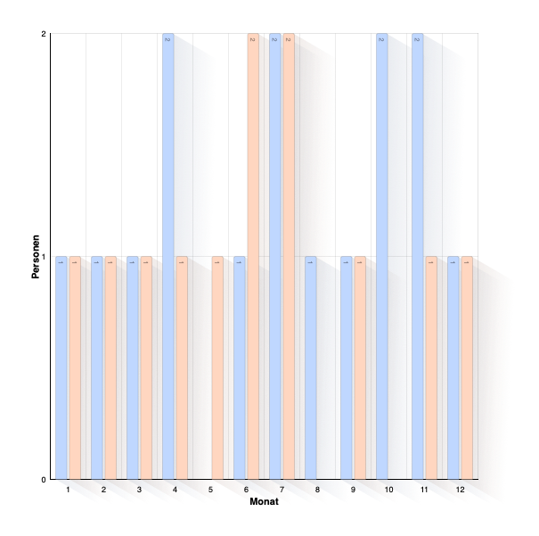
Sterbemonat
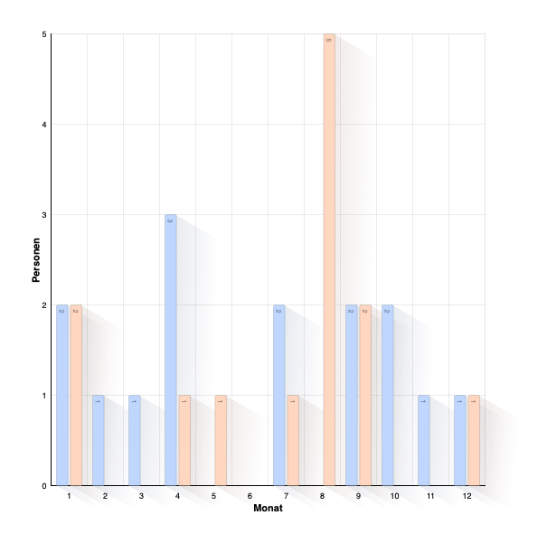
Hochzeitsmonat

Kinder pro Familie
Geburtsort
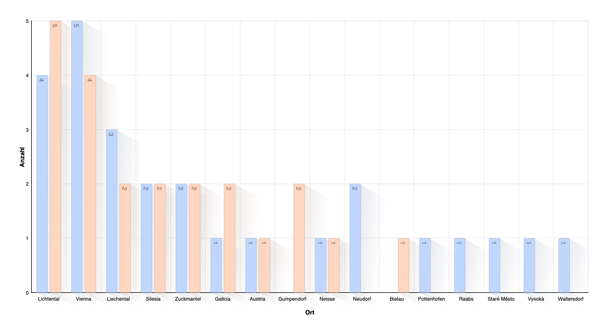
Geburtsland
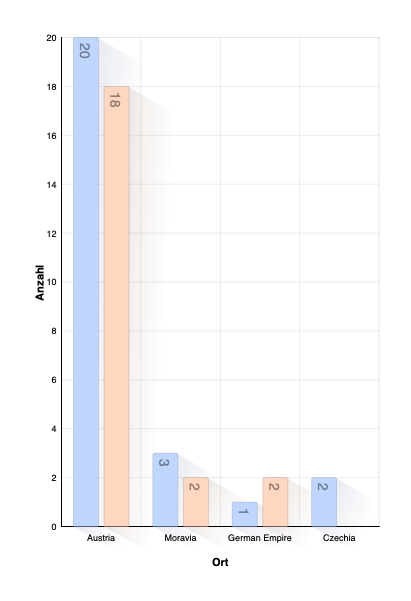
Taufort
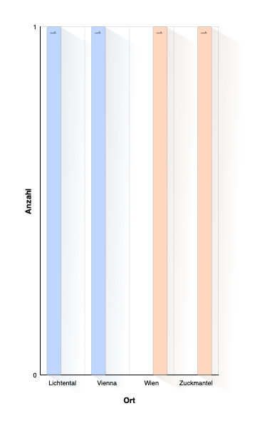
Taufland
Todesort
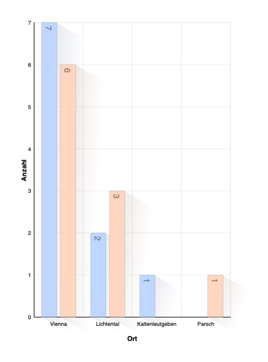
Sterbeland
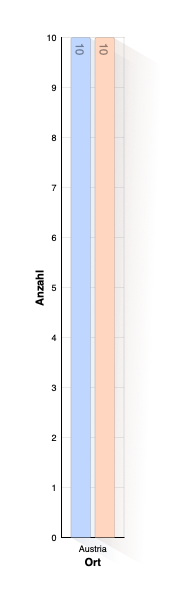
Begräbnisort
Beerdigungsland
Hochzeitsort
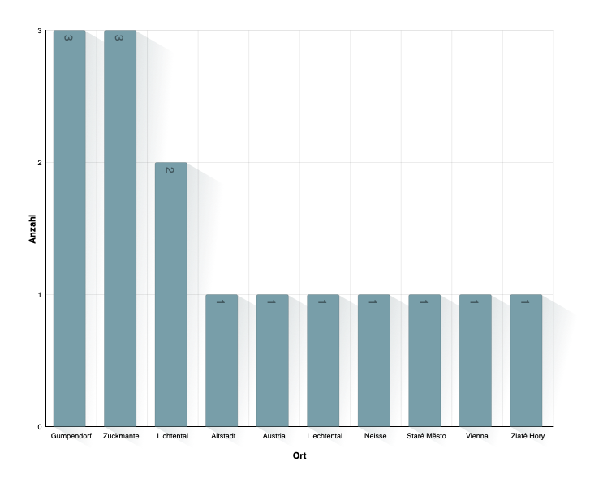
Hochzeitsland
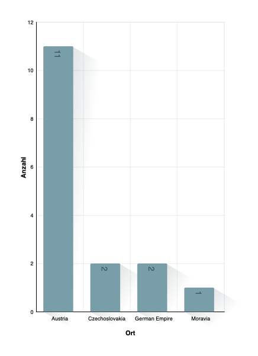
Geschlecht
Ereignis- oder Fakt-Arten